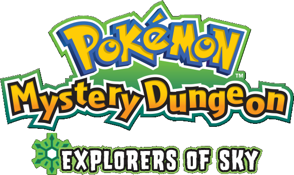

Pokemon Mystery Dungeon - Explorers of Sky

| Release Date: | October 12, 2009 |
| Genre: | Dungeon Crawler |
| Developer: | The Pokemon Company/Chunsoft |
| Platform: | Nintendo DS |
| Details: | Bulbapedia |
This is one of the many spin-off games of the Pokemon series, this is what I'd call the "definitive edition" of the second installment of the Mystery Dungeon series. It addresses some of the issues within the original games, Explorers of Time and Explorers of Darkness, while also adding in some additional content. The game is a dungeon crawling, rouge-like style game, where you're exploring different randomly generated "mystery dungeons", utilizing your moves and items to dispatch enemy pokemon and complete generated quests by pokemon in town. It's unique from the main-line series in that there are no humans in the world (for one exception), only inhabited by Pokemon.
The premise of the game is that your a human-turned-Pokemon transported to this world, with no memory besides your name and that you were a human prior. You're found on a beach by Pokemon, who while weary, believes your story and introduces themselves. Together, you form an exploration team and explore the world to figure out why you've been brought to this world, meeting many different Pokemon along the way!
Story & Worldbuilding
The game really shines with its worldbuilding, starting from the get-go of how you pick the pokemon you'll play as. Instead of just picking from a list of Pokemon, it has a questionnaire that you answer to determine which Pokemon fits your "nature". While it makes it a bit of a pain to play as a specific Pokemon, it works into the world "why" you've been transformed into the Pokemon in which you are. It also explains why there's these "randomly generated dungeons" scattered around the world, how are they affecting the surrounding Pokemon, and helps give the Exploration Teams more of a place in the world. They took the time to work in the game mechanics into the world they're occupying, rather than them just being there.
The game also starts off really strong in developing its characters. Upon starting the game, we're not greeted with our character, but rather our partner at the gate of the local exploration guild. They show how our partner is nervous, brought along their lucky stone, and how they react to the surprise of the guild sentry. They then sulk away to the beach, and express how coming here relaxes them, but reflect on they'll never achieve their goal at this rate. All of this setups our partner, expressing that they're more than just an accessory to the player, but their own being with goals and feelings of their own. As the game progresses, you can see how they grow as a character, overcoming their fears and achieving the goals they sought out to achieve.
All of this, and we haven't even touched on the STORY. Unlike the main-line Pokemon games, they do not hold back the story in these games. I don't want to get into details in the chance you haven't played this game, but the story here is great. As the game goes on, you and your partner grow within the guild, adventuring out into the world and learning about some of the troubles in the world, oddities that seem out of place, and tends to answer the questions it presents with the player. The main story is fantastic, but once the credits roll, that's merely halfway through the story. The second half, while has a couple of flaws, answers even further questions. Explorer of Sky also introduces even more backstory, with the introduction of the Special Episodes, which you unlock as you progress through the game. They're completely optional, but they provide additional backstory to some of the characters or wraps up their own stories that were left unanswered in the original games.
Gameplay
The game itself is an interesting take on the Pokemon formula. The game still feels like a Pokemon game in the way it plays, but in a more fluid way that fits the rouge-like genre nicely. While exploring the mystery dungeons, it still behaves in a turn-based fashion, where you have unlimited time to observe your surroundings and determine what action you wish to take, with your party moving after you, followed by opponents. You can build up your squad of four Pokemon from recruiting enemy Pokemon to your exploration team, working in the capture mechanic into the world without pokeballs. Not everything is based off the main games however, for there's other mechanics like hunger that the player needs to worry about. It's a nice balance between a fun entry-level dungeon crawler, along with familiar mechanics from the main series of games.
One of the more important aspects that had to be adapted was the moves Pokemon learned. The attacks are all based off the usual moves you'd find in typical Pokemon games, but they've have been adapted into the dungeon environment, giving some mores extra utility. For example, while Tackle allows you to attack Pokemon in front of you, Quick Attack does the same but allows you to hit up to two tiles away. Some moves may have area of effects, to deal with crowds of enemies, or utility moves to boost or heal your allies. It gives moves a lot more variety, and gives the player more options in how they want to play. Flamethrower is a powerful move with long range capabilities, but has little PP. You may run it alongside Ember, which can only hit the tiles nearby, but has a lot of PP, allowing you to last longer in dungeons without having to rely on healing items.
Speaking of items, they provide the player with options that their species of Pokemon may never allow them to obtain. There's different types of seeds that can provide the player with useful buffs, like boosting your stats or exposing the locations of traps, but also seeds that can hinder your enemies by throwing them at them (sleep seeds and stud seeds for example). It adds an extra layer to combat of not only picking an attack, but unitizing items to turn the fight in your favor. However, you only have so much space in your bag, so you'll have to prioritize what items you want to bring into the dungeon.
The game presents an enjoyable gameplay loop that rewards the player for observing their surrounding, preparing the right tools for any number of situations that may arise, and managing their resources to survive till the end of the dungeon. The one problem with it is that there's only so many variables that the dungeons can present that it can feel a bit repetitive after a while. While the environment and Pokemon within the dungeon change to fit the its location in the world, the differences aren't enough to really give enough variance from dungeon to dungeon. There are some dungeons in the late game that provide specific restrictions before entering, they're limited to the late game and provide some unique "challenge" dungeons to test your skills.
Immersion
The world that the developers have created provide a rich world for the player to explore, but it would be lost without how it's presented to the player. The visuals that this game provides can be breathtaking, the spritework done really brings these locations to life through their vibrant colors and attention to detail. Each Pokemon has their own unique animations that fit their personality, in how they move, attack, sleep, etc. The backgrounds for each area the player explores fit their location within the world, drawn in a way to express to the player the beauty of the world in which they've been brought to.
We can't talk about these games without bringing up it's soundtrack. If you haven't heard it before, throw it on in the background and listen. The tracks can stand on their own, but when put into the context of where they play within the game, it elevates the experience tenfold. I could make a whole page just talking about the final tracks of the first arc (Tracks 58-76), in how each song evokes the exact emotion that the character's are experiencing at that point in the story. Out of any game, I think this one is the best example of how music can enhance the experience of a story.
Overall Thoughts
In case if you haven't realized by now, this is one of my favorite games of all time. I've played through it multiple times throughout my life and each time I play it I get more appreciation in the amount of love and care the developers put into this game. The amount of effort that went into creating this world that isn't just there for the player, but feels lived in by many different types of Pokemon, regardless of the presence of the player cannot be praised enough. The story is engaging in that it not revolving around the player, but the player takes action in protecting a world that they've grown to love by those who live within it. While it's overall gameplay isn't revolutionary, it's enjoyable to play and still ties into how these Pokemon would actually travel through these dungeons. If your a fan of the Pokemon series but wanted something a bit more captivating, then I cannot recommend this game enough.